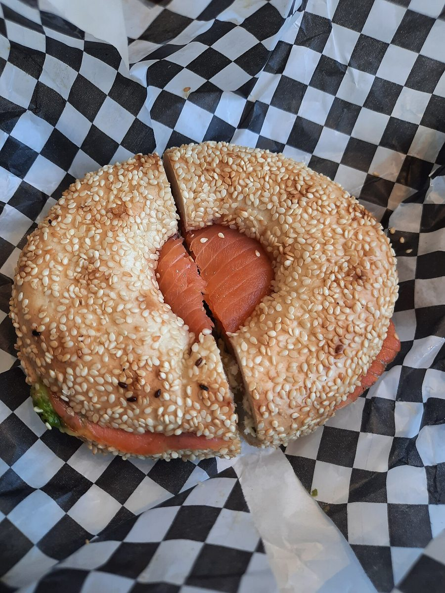
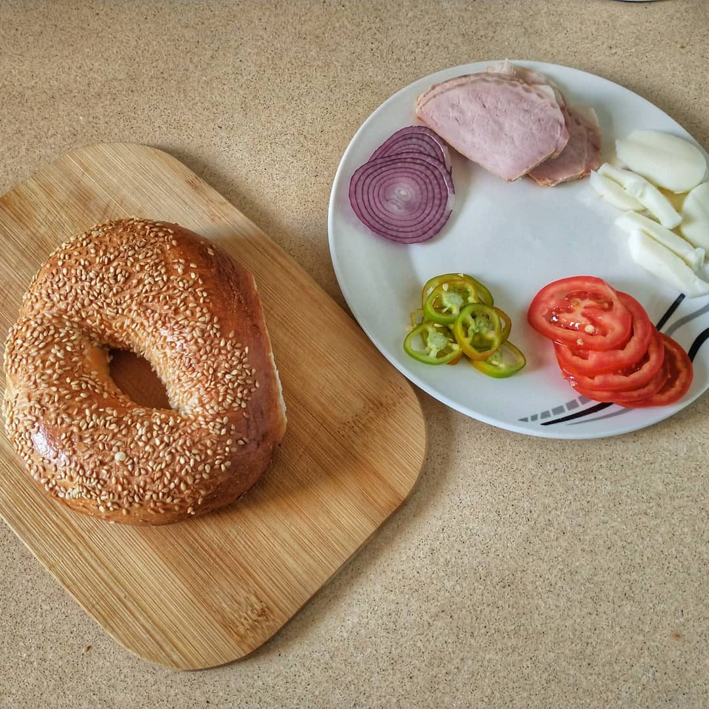

ベーカリー / 宮城県名取市
マルコベーグル マルコ
宮城県名取市にあるベーカリー「ベーグル マルコ」のご案内ファイルです。営業時間やメニューは準備中。お電話かInstagramからお問い合わせください。

ファイルの中身
5枚の仕切り紙(インデックス)で、このサイトの内容をまとめました。
二つの穴の連想
お店の名前から、制作側は「穴のあいたパン」を連想しました。そこから、ルーズリーフの二つ穴 → 二つ穴ファイルに綴じた書類、へと連想をつなげ、このサイトを「1冊のファイル」に見立てています。ページは1枚ずつのルーズリーフで、左側の丸い穴で綴じ、上部に仕切り紙のインデックスが並びます。
これは制作側の連想です。お店の理念・名前の由来とは無関係で、お店の考えを示すものではありません。
パンのまわりの写真(イメージ)
国外・撮影地不明のフリー素材です。お店で提供しているものを示すものではありません。



ご案内(確認できたものだけ)
| 所在地 | 〒981-1224 宮城県名取市増田4丁目7-1 |
|---|---|
| 電話 | 022-382-1505 |
| 営業時間 | 準備中 |
| 定休日 | 準備中 |
| ご予約 | 準備中 |
| 駐車場 | 準備中 |
| SNS | Instagram @bagel_maruco |